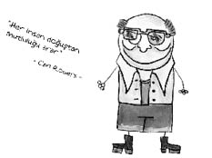

Carl Rogers (1902-1987)
Amerikalı psikolog. Babası inşaat mühendisi, annesi ise dindar bir kadındı. Kendisi önce ziraat, sonra ilahiyat okumuş, fakat dinden uzaklaşmıştır. Klinik psikolojisinde doktora yapan Rogers, “hümanistik psikoloji”nin öncülerindendir. “müşteri merkezli psikoterapi”nin (Danışan Merkezli Terapinin) öncüsüdür. Hasta yerine “müşteri” terimini ilk kez kullanan odur. Wisconsin Üniversitesi’nde çalıştığı sırada burada hastanede tedavi gören şizofren hastalara bu terapiyi uygulamış ve özellikle içedönük olan ve konuşmayan psikotik hastalarda, empatik anlayış yoluyla kurulan etkileşim sayesinde çok olumlu sonuçlar elde etmiştir.
Rogers’a göre bireye terapistin yardım edebilmesi için üç nitelik gereklidir: Empati, değer verme, içtenlik.

Neymiş empati…
Peki Carl Rogers’la adeta özdeşleşen empati kavramı, kişinin kendini başkasının yerine koymasıdır. Ama bu bedenen bir yerine koyuş değil, fikren, temsili bir yerine koyuştur.
Empati hissim güçlü mü diye meraktan ölen kişi şu testi yapabilir: Yanında birileri esnediğinde o da esniyorsa empati yapabiliyor demektir. Çok esniyorsa çok, az esniyorsa az.
İlginç bir şekilde, televizyonun icadı ve evlere girmesiyle özellikle Türk kadınının empati hissinin doruklarda olduğu gayet net bir biçimde ortaya çıkmıştır. Hatta Türk dizi ve filmleri tamamen empati hissimiz üzerine kuruludur. Dövülenle dövülür, ağlayanla ağlar, gülenle güleriz...
Başka bir örnekte, empati kavramını yanlış anlayan iki kadın arasında geçen kurgusal bir konuşma:
– Mualla, kocan seni çok dövüyor, vallahi çok üzülüyorum. Seninle empati kurmak istiyorum. Geleyim bir gün de beni dövsün.
– Sağ ol komşu, düşünmen yeter.
– Ölümü gör bak, dayak yemeden bırakmam. Empati yapalım ki dünya değişsin di mi ama?
– Eh, madem çok ısrar ettin, bu akşam beşte gel!
BİTMEZ...